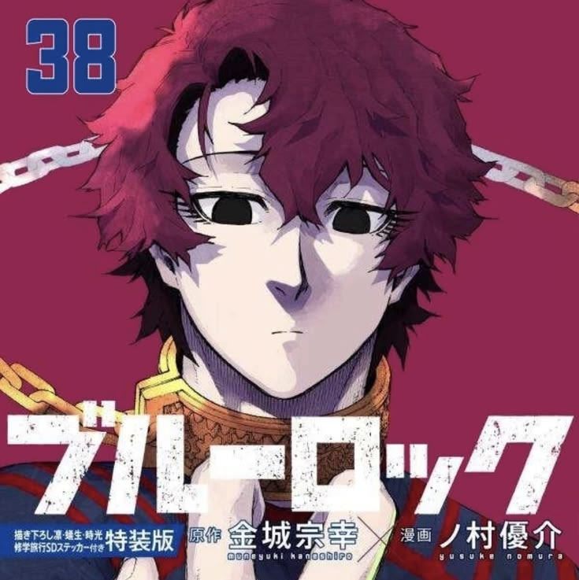

Blue Lock Wiki > Characters > New Generation World XI
| Hugo Vivian |
 "World's Second Best / A Shadow to Julian Loki |
|---|---|
| Katakana | ビビアン・ユーゴー |
| Romaji | Bibian Yūgō |
| Gender | Male |
| Nationality | French |
| Hair Color | Burgundy |
| Position | Center Midfielder |
| Affiliation | France U-20, Arsenaly |
| Current Team | New Generation World XI |
Hugo Vivian (ビビアン・ユーゴー, Bibian Yūgō) is a prodigious football player known as one of the best players in France. Hugo is a member of the New Generation World XI, as well as Arsenaly's team, and a center midfielder on the France U-20 team in the PIFA U-20 World Cup.
Hugo Vivian's face has a modified diamond shape with evident bone structure and elegant proportions. His skin is very fair with dark, observant almond-shaped eyes, with the outer corner slightly more pointed/ascending, relatively sharp and expressive. He has a tall and athletic physique that towers over Loki and Charles, and tousled hair with plenty of volume and natural movement. Hugo has a burgundy hair where his strands fall irregularly, some turned outwards, others inwards, with a small fringe on the right side of his forehead. His haircut resembles a very characteristic Wolf cut/shag style. He usually has a neutral expression on his face. He has very long eyelashes that almost reach the corner of his face. Remarkably, his pupils exhibit an eerie, scribbled-like appearance when he's serious.
During U-20 World Cup, Hugo wears the France U-20 uniform with wristbands. He does not pull his socks all the way up.
Hugo believes in a strict, logical, and almost fatalistic approach to football. He argues that every player is born with specific traits suitable for a certain role and that trying to go against this "destiny" only creates unnecessary struggle. He finds it "logical" to excel in one's natural, ordained position rather than forcing oneself to be a striker. Unlike egoists who want to destroy others, Hugo comes across as a "kind" antagonist or anti-villain. He acts as a mentor, genuinely believing he is doing players like Isagi a favor by guiding them toward their "correct" role. He is often described as a "whimsical fella" who causes mental breakdowns simply by pointing out the "logical" flaws in others.
Hugo is characterized by a neutral, often expressionless face with "dead", observant eyes, similar to a "brainiac" or a "robotic" prodigy. He remains calm, nonchalant, and analytical even in high-pressure moments, focusing on "suitable destiny theory". As a New Generation XI Midfield General, he is quick to point out flaws, respects opponents who prove their skill, and aims for the #2 spot (often viewed as the position that truly understands and manages the #1).
He is known to make strange, loud sounds during matches, such as "Zoom" or "Beep-beep", which fans have linked to verbal stimming.